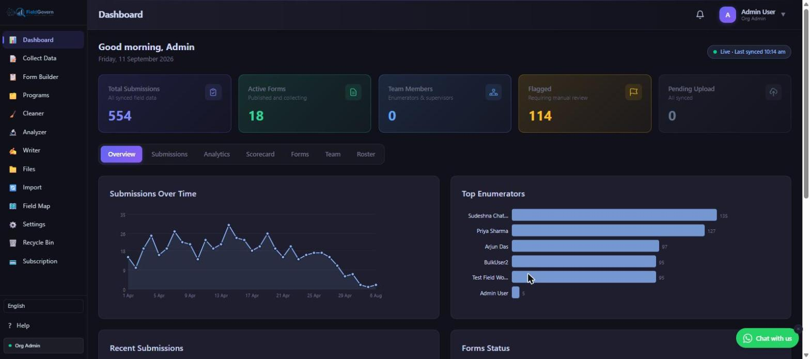

Search for a survey or CAPI data collection tool in India today and you'll land on roughly three kinds of product. There's the global open-source stack — ODK-based tools like KoboToolbox, built by and for the international humanitarian and research community. There's US-headquartered commercial SaaS — SurveyCTO is the best-known example — built primarily for a global research market with India as one customer base among many. And there's a smaller, growing category: platforms designed, built, and operated in India, for the specific realities of Indian fieldwork.
This guide is about that third category — what "built in India" should actually mean for a buyer, and how it compares honestly against the other two. It is not a claim that India-built tools are universally superior; each category has real strengths. It's a framework for knowing which strengths matter for your specific programme.
What "Built in India" Should Actually Mean
"Made in India" gets used loosely in software marketing. For data collection tools specifically, a buyer should look for four concrete things, not just a claim on a landing page:
- Development and support team based in India. The people who build the product and answer your support tickets work India hours, understand Indian fieldwork constraints (patchy rural connectivity, multilingual enumerator teams, local ID formats), and are reachable without a time-zone tax.
- India cloud hosting. Respondent data is stored on India-region infrastructure by default, not routed through a US or EU data centre as the standard configuration.
- INR pricing with GST-compliant invoicing. Your finance team gets a standard tax invoice in rupees, not a USD charge on a foreign merchant statement that your auditor has to explain every year.
- DPDP-native compliance tooling. Consent capture, audit logging, and data-processing agreements built around the Digital Personal Data Protection Act 2023 from day one — not retrofitted from a GDPR compliance module built for a different legal framework.
A tool can be built by an Indian team but still fail several of these (e.g., hosting on a foreign cloud region by default, or pricing exclusively in USD). Check each dimension independently rather than assuming they all come as a bundle.
The Three Categories, Honestly Compared
Global Open-Source (ODK-based tools, KoboToolbox and similar)
Tools built on the Open Data Kit (ODK) standard have real strengths: they're free or low-cost to start, backed by a large international community, and battle-tested across humanitarian response and global public health research. KoboToolbox in particular is widely used by UN agencies and international NGOs and has deep experience with humanitarian data standards. The trade-off is that these tools are built for a global user base first — India-specific needs like DPDP consent workflows, Indian-language form design, or INR billing are not the design centre, and self-hosting or managing your own server instance often falls on your own technical staff.
US-Headquartered Commercial SaaS (SurveyCTO and similar)
Commercial tools headquartered in the US bring polish, mature enterprise features, and strong offline CAPI capability refined over many years of academic RCT and M&E use — SurveyCTO in particular is trusted by major research institutions worldwide. The trade-offs for an Indian buyer are structural: pricing is USD-denominated (which fluctuates against the rupee and complicates grant budgeting), support runs on US business hours, data is typically hosted on US or EU cloud infrastructure by default, and DPDP-specific compliance tooling is not a native design consideration since the product wasn't built around Indian data protection law.
India-Built Platforms (FieldGovern and similar)
India-built platforms are designed around the constraints above from the ground up: India-region hosting as the default, INR pricing with GST invoicing, support teams working IST hours, and compliance tooling built directly around the DPDP Act rather than adapted from a different framework. The trade-off, honestly, is ecosystem maturity — the global open-source and established US SaaS categories have longer track records and larger user communities. For teams whose primary constraints are India-specific — state government tenders, INR grant budgets, DPDP audits, multilingual field teams — an India-built tool closes gaps the other two categories weren't designed to close.
| Dimension | India-Built (e.g. FieldGovern) | Global Open-Source (ODK/Kobo-style) | US SaaS (SurveyCTO-style) |
|---|---|---|---|
| Hosting region | India by default | Depends on self-hosting or third-party host chosen | US/EU by default |
| Pricing currency | INR, GST invoice | Free/low-cost core, hosting cost varies | USD, foreign billing |
| Support hours | IST business hours | Community forums, limited paid support tiers | Primarily US business hours |
| DPDP-native tooling | Built-in consent capture, audit logs, DPA | Not India-specific; DIY compliance layer | Not India-specific; DIY compliance layer |
| Offline capability | Full offline PWA, auto-sync | Strong offline support (ODK Collect app) | Strong offline CAPI support |
| Government tender fit | NIC/GeM empanelment achievable | Rarely empanelled as a managed vendor | Rarely empanelled as a managed vendor |
| Indian-language support | Designed in, AI-assisted translation | Supported, community-translated | Supported, not a primary design focus |

When Each Category Is the Right Choice
Being fair to all three categories matters more than picking a winner in the abstract — the right tool depends on your programme's actual constraints:
- Choose global open-source if you're running a small, technically self-sufficient team comfortable managing your own server, your budget is near zero, and DPDP-specific tooling isn't yet a pressing requirement for your funders.
- Choose US SaaS if you're part of a multi-country research consortium standardising on one platform across geographies, USD grant funding is already the norm for your programme, and India-specific compliance isn't the deciding factor.
- Choose an India-built platform if you're working with Indian government departments or state tenders, managing INR grant budgets where currency fluctuation is a real line-item risk, need DPDP consent and audit tooling out of the box, or want a support team that answers in your working hours without an escalation chain.
Total Cost of Ownership: A More Honest Comparison
Sticker price comparisons between these three categories are misleading on their own, because the real cost of each includes things a pricing page doesn't show. Open-source tools look free until you count the engineering time to self-host, maintain server uptime, and build a DPDP compliance layer from scratch — a cost that's real but often invisible because it's absorbed as staff time rather than an invoice. US SaaS tools look reasonably priced in USD until you factor in currency risk over a multi-year grant cycle and the GST documentation gap covered in our companion article on why NGOs are reassessing foreign survey tools. India-built platforms typically price as an all-inclusive SaaS fee — hosting, support, and compliance tooling bundled in — which is easier to budget against but worth comparing feature-for-feature rather than assuming it's automatically cheaper.
| Cost Component | India-Built SaaS | Self-Hosted Open-Source | US SaaS |
|---|---|---|---|
| Licence/subscription | Fixed INR fee, all-inclusive | Free core software | USD fee, currency-variable |
| Hosting/server maintenance | Included | Your own staff time or a separate hosting bill | Included |
| DPDP compliance build-out | Included (native tooling) | Your own staff time to build/configure | Your own staff time to build/configure |
| Support time cost | Low (IST, fast response) | Variable (community-dependent) | Higher (time-zone lag on urgent issues) |
Migration Considerations If You're Switching Categories
Teams already running an ODK-based or SurveyCTO workflow often assume switching categories means rebuilding everything from scratch. In practice, the friction is usually smaller than expected for standard CAPI-style forms: question types, skip logic, and repeat groups map reasonably cleanly across tools, and historical data typically exports to CSV or a statistical format regardless of source platform. The parts that take real planning are enumerator retraining (muscle memory on a new app interface), re-testing offline sync behaviour in your actual field conditions before a live survey round, and validating that any custom scripting or complex skip-logic your form relies on has an equivalent in the new tool. Budget a full pilot round — not just a desk review — before retiring the old tool for an active study.
A Practical Evaluation Checklist
What Gets Overlooked in a Features-Only Comparison
Most buyer's guides for survey software compare feature checklists — skip logic, GPS capture, media upload, offline mode — and treat every tool in a category as roughly interchangeable once the checklist matches. That approach misses the dimensions this guide focuses on, because feature parity across all three categories is genuinely high in 2026: offline capture, skip logic, and media capture are table stakes everywhere now, open-source included. The differentiator that actually determines whether a tool is a good long-term fit for an Indian programme isn't whether it can do offline GPS capture — it's whether renewing the contract next year involves a currency surprise, whether your auditor accepts the invoice, and whether a fieldwork-blocking bug gets answered before your enumerators go home for the day. Those are operational and financial fit questions, not feature questions, and they're exactly the ones a spec-sheet comparison leaves out.
Where FieldGovern Fits
FieldGovern is built by Pavankumar Deshetty in strategic marketing partnership with Dataworx, an India-registered data-science & M&E firm, and was designed from the outset around the constraints Indian NGOs, government M&E departments, and academic research teams actually face: fully offline-first data capture (GPS, photo, audio, repeat groups), AI-assisted form building and Indian-language translation, DPDP-native consent and audit logging with a signed DPA, and INR pricing starting around ₹8,399/month with standard GST invoicing. It exports cleanly to CSV, Stata .dta, SPSS, and Google Sheets, so switching from an existing ODK-based or SurveyCTO workflow doesn't mean losing compatibility with your existing analysis pipeline.
The honest pitch isn't that FieldGovern replaces every use case for open-source or US SaaS tools — it's that for the specific set of India-shaped constraints covered in this guide, it's built to close gaps those categories weren't designed around.
See an India-Built Platform in Action
Offline-first, DPDP-native, INR pricing, and a support team in your time zone. Try FieldGovern free.
Start Free Trial